开发者个性化推荐技术的研究
 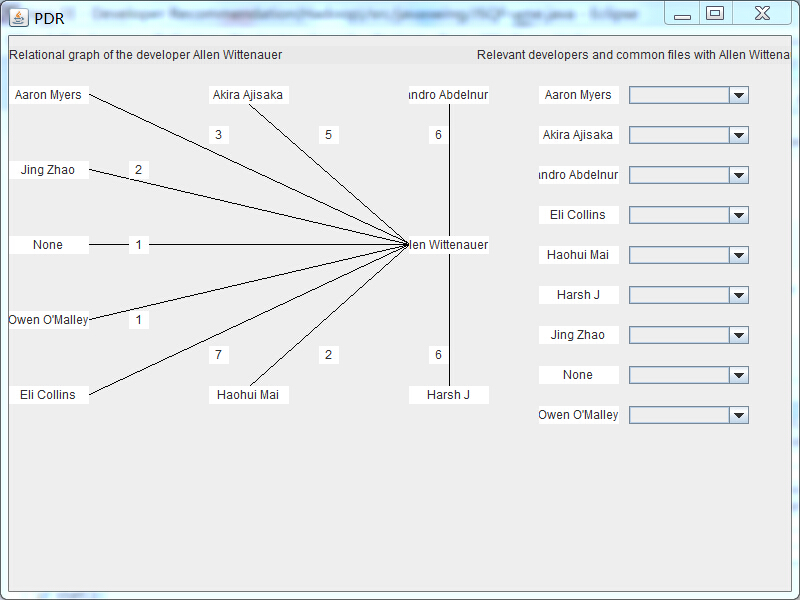
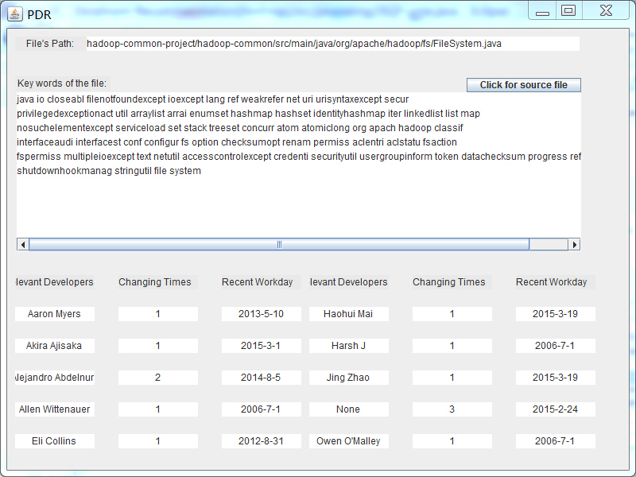
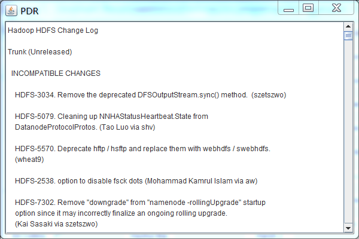
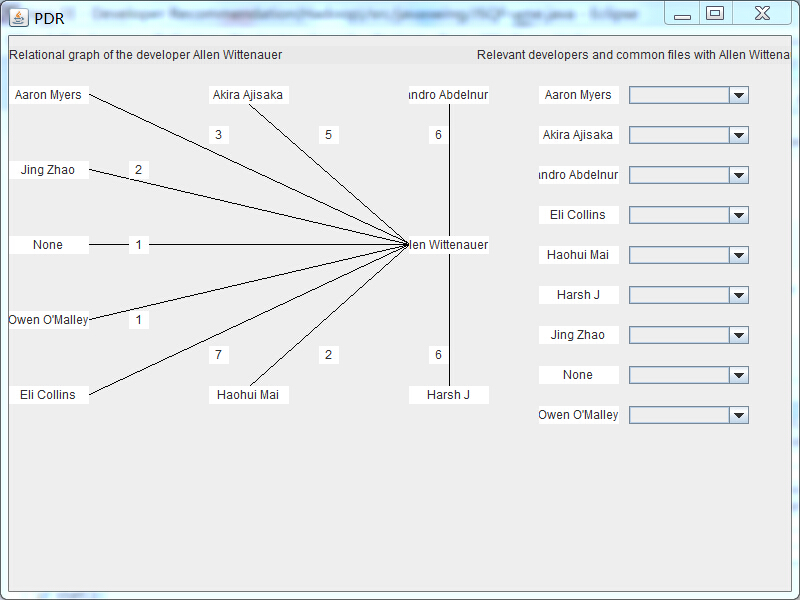
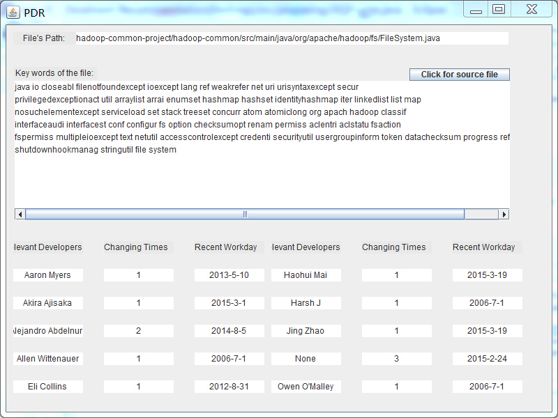
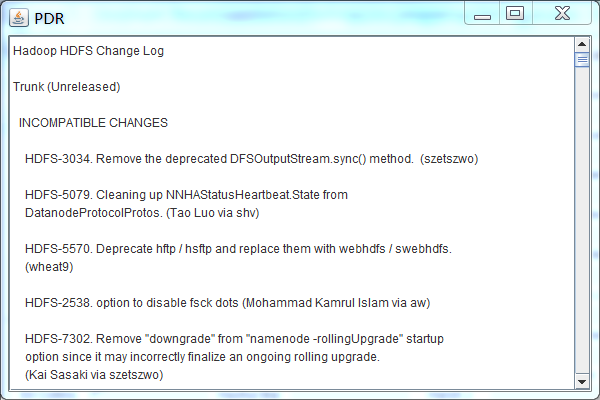
具体软件历史代码库的词库自动构建方案与工具实现
 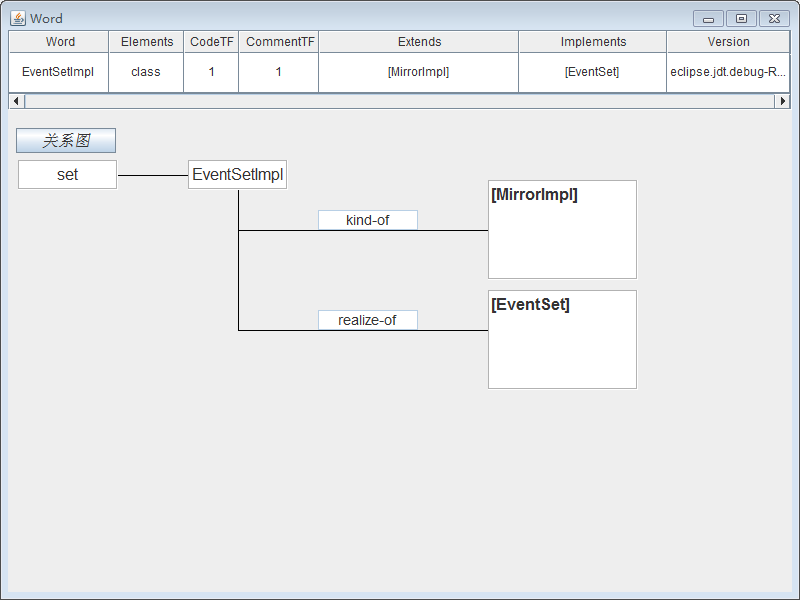
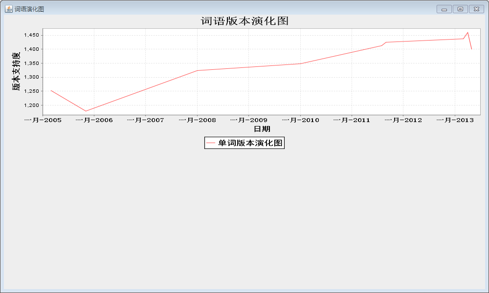
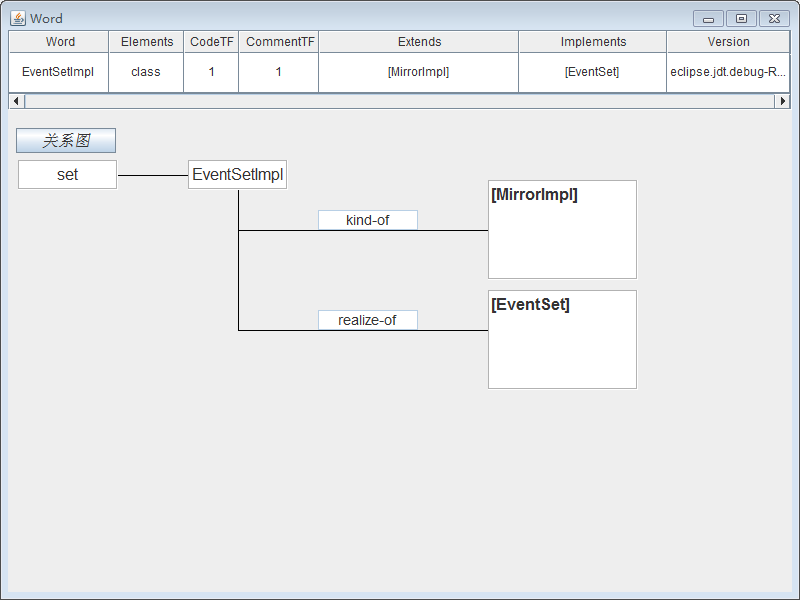
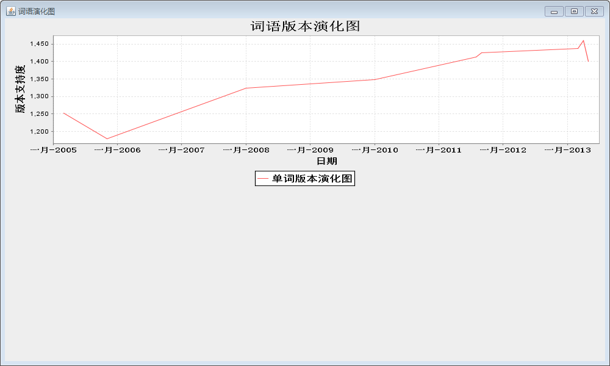
面向多源数据的软件缺陷领域的命名实体识别平台
点击“select the file information”按钮可选择需要处理的缺陷数据文件。
“Tokeniser & POS tagger”部分对缺陷数据文件进行分词、词性标注处理；
“Human Entity Annotation”部分查看缺陷数据各个实体的人工标注结果；
“Word Embedding Feature”部分查看缺陷数据实体的词向量处理结果；
点击“CRF model”按钮，使用已经训练好的命名实体识别模型对缺陷数据文件进行测试，并查看结果。

在“CRF model output”部分查看结果以及实体识别的效果；
底端的饼状图是缺陷数据的实体分类结果。
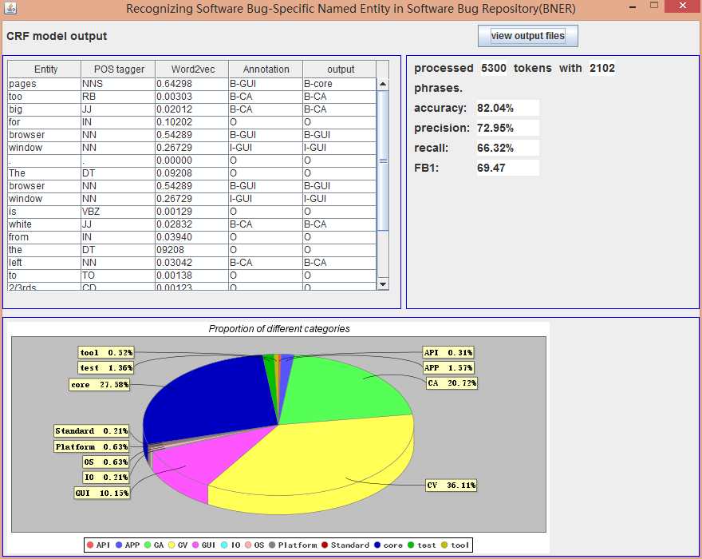基于知识图谱的bug问题搜索系统
基于知识图谱的bug问题搜索系统是用来帮助开发人员搜索和解决bug问题。我们构建了bug知识库，并在此基础上构建了bug知识图谱，结合探索性搜索的思想搜索bug问题。这不仅可以有效管理软件历史库中的bug、commit数据，还能为开发者提供更全面的bug相关信息，更好的管理软件历史库中的bug报告、commit等数据。此外，本系统还利用一种终身主题模型进行bug知识库的自动更新。
图1为搜索界面。搜索界面中主要是搜索框和搜索范围的选择。Bug报告可以按产品，平台、组件进行分类。由于bug报告数据量较大，搜索起来运行时间较长，为了缩小搜索范围，减少搜索时间，因此在搜索bug问题前，可对bug的产品、平台及组件进行选择以缩小搜索范围。

当用户选择了产品、组件及平台信息，缩小了搜索范围，并输入bug问题，进行搜索后。就会进入到结果返回界面。搜索结果返回界面包含的p功能有：搜索框，列表形式的搜索结果，知识图谱形式的搜索结果，以及标签云信息。列表形式的搜索结果左边呈现的是与该bug问题相关的bug报告数据，它们以列表的形式按照相似度高低进行排序呈现给用户。右边是与当前搜索内容最相关的bug知识图谱，其中bug报告，commit以及相关人员的数据信息都以图谱的形式呈现给用户。帮助其对bug问题进行进一步的探索及了解。搜索结果界面截图如下图2所示：
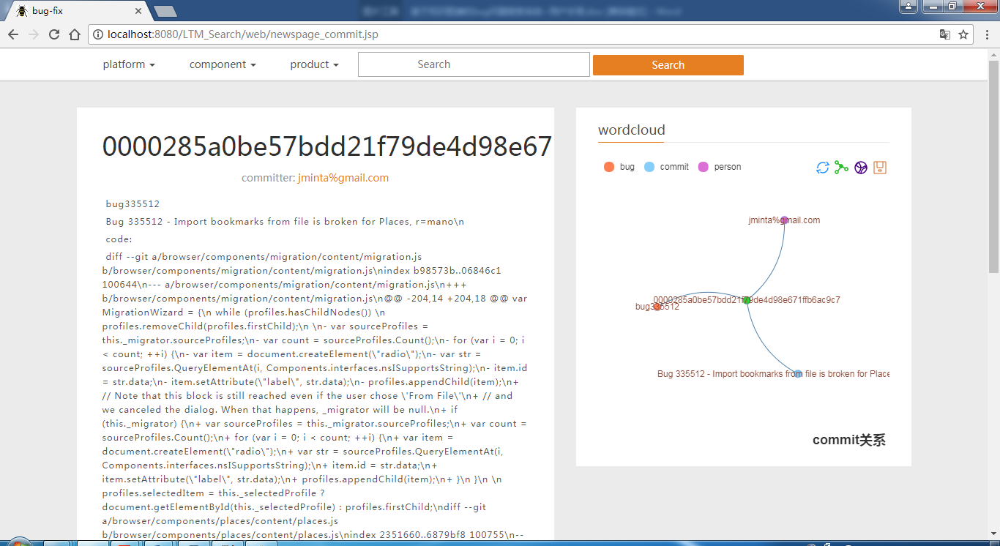当用户搜索一个bug问题后，会呈现与之相关的bug数据，用户点击查看某一bug数据后则会进入bug数据界面。该界面提供以下的功能：bug问题搜索功能，bug报告的详细数据，以及以该bug为中心的bug知识图谱。此外，用户如果通过该bug报告并未能够完全熟悉该bug问题，还能通过bug报告下的similar按钮来查看一些相似的bug。当用户想要搜索其他bug问题时，还能在搜索框中在此进行搜索。Bug数据界面如下图3所示：
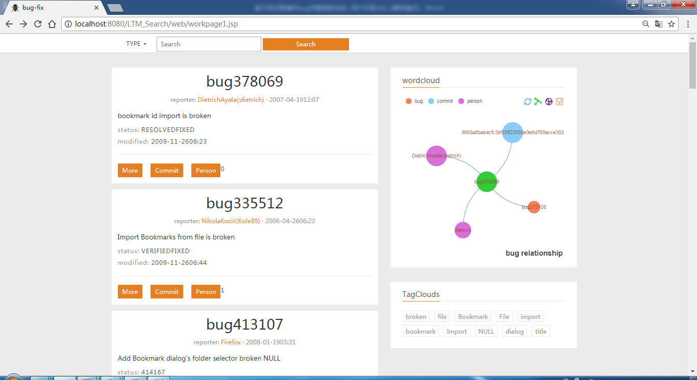当用户了解了与要搜索的bug问题相关的bug报告后，为了找出该bug问题的解决方案，用户还需查看一些历史的已经修改的commit方案进行参考，因此当用户点击bug报告详细数据下的commit按钮。此时就会进入commit信息界面。在commit信息界面中主要呈现的功能是，bug问题搜索框，commit信息的详细数据，以及以该commit为中心的bug知识图谱。此外，用户如果通过该commit数据并未能够找出bug问题的解决方案，还能通过commit详细数据下的similar按钮来查看一些相似的commit数据。此外，当用户想要搜索其他bug问题时，还能在搜索框中在此进行搜索。Commit数据截图界面的如下图4所示：
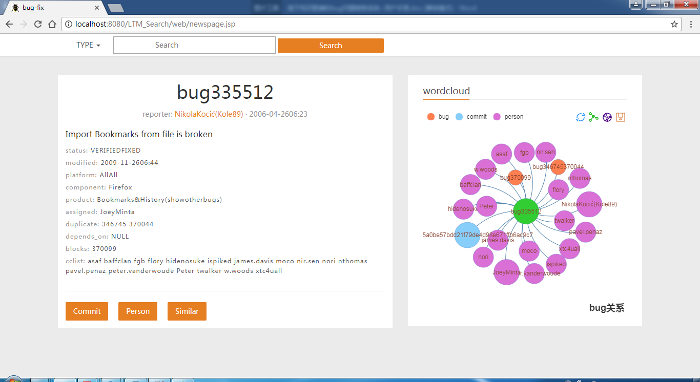为了保证用户查询时的准确率，我们提供知识库更新功能，随时可以对系统中的知识进行更新。更新的具体步骤如下：首先准备好要更新的bug数据文件，将其保存在本系统的更新文件夹中，然后在更新界面选择更新bug，等待系统将新数据进行预处理并添加到数据库中。更新界面如下图5所示：
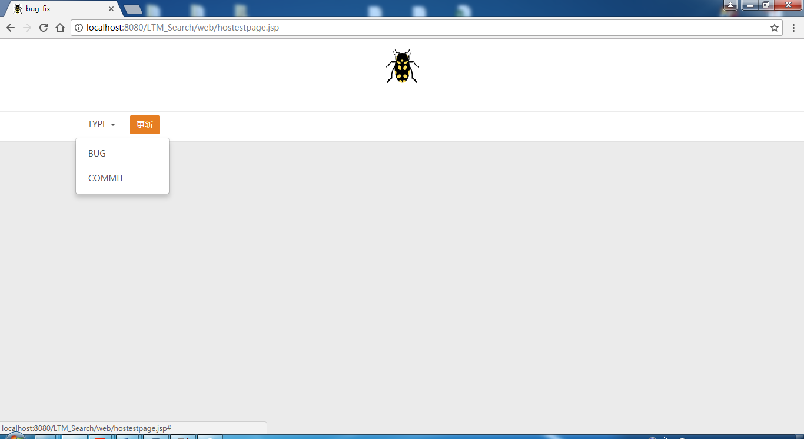本系统中的数据主要都是基于bug知识库，要构建该bug知识库，我们主要结合一种基于LDA的终身主题模型来构建它。首先，我们使用Python网络爬虫来获取将软件历史库中的bug报告，commit信息、相关人员信息及其之间的关系，使用自然语言处理工具对其进行处理。后分别从中提取出bug、commit及人员的实体，将其余信息作为实体的属性。并构建实体间关系。将这些数据中的标题及描述信息进行提取后，使用主题模型进行主题词的提取，并对其分类，从而构建数据间的关联关系。并将这些数据存放在图形数据库中。从而构建完成一个整合了bug报告、commit及人员信息的bug知识库。存放在图形数据库中的数据如下图6所示：
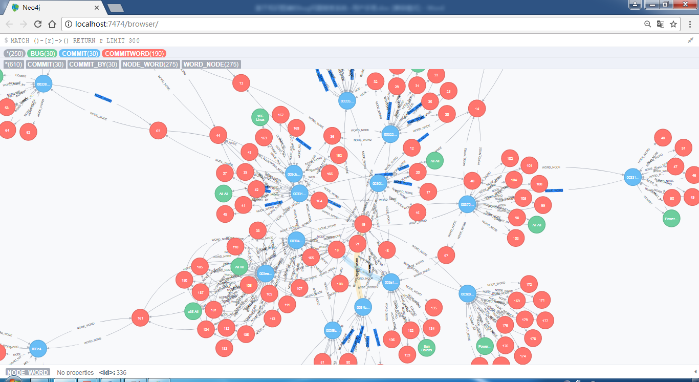基于GitHub的个性化软件仓库推荐系统
REPERSP 是一个基于GitHub的个性化软件仓库推荐系统。它分为在线离线两部分：在线部分为一个 Web 服务、它负责与用户交互、抓取 GitHub 数据、呈现推荐结果和接收用户返回。离线部分负责周期性的执行推荐算法，将推荐结果写回到数据库。
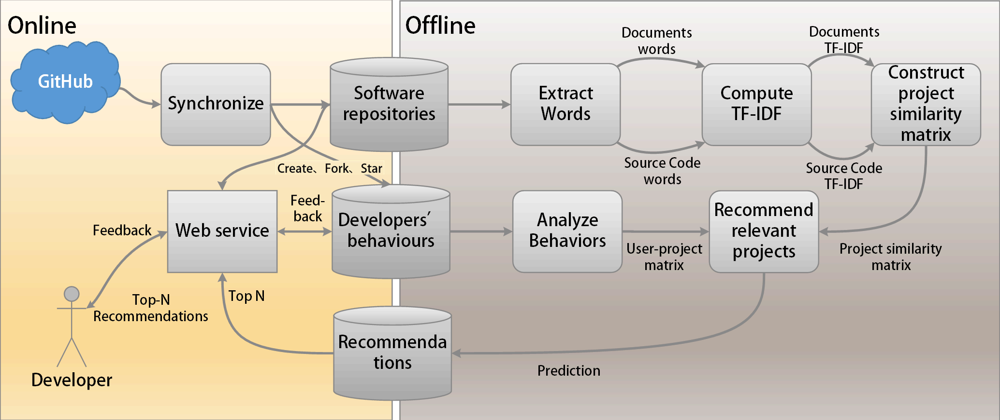行为面板：用户登录系统后，可以使用“Sync”按钮将 GitHub 上的信息同步到REPERSP数据库。同步完成后，用户可以在面板1中看到自己 Create、Fork、Watch 和 Star 的项目，他也可以用面板2选择特定行为的项目。在同步期间，用户可以在面板3处看到自己同步进度。

推荐面板：用户可以在面板1处选择 Top3，Top5 和 Top10的推荐，在面板2处用户可以看到本系统推荐的具体项目，包括项目名称，作者，以及介绍。同时，用户可以通过按钮“Like”和“Dislike”评价推荐结果。这会有效改善下一轮的推荐结果。
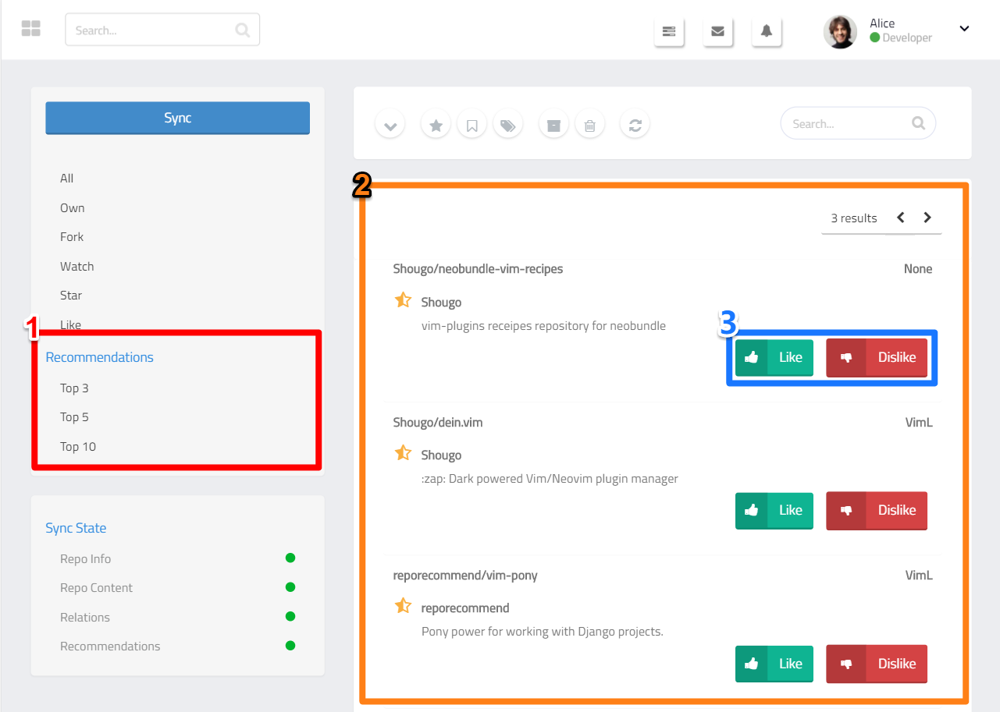面向软件开发领域的词库自动构建平台
我们致力为广大软件开发人员提供更加专业的查询平台，直接分析源代码，让读代码变的轻松。该平台包括三个关键技术有：针对具体软件代码系统提取代码结构、结合Wordnet推荐同义词/相似词、自动对查询语句进行精化处理。
1. 首界面
自定义检索项目并输入查询单词或查询语句。也可以查看简介、技术支持和联系方式。

2.输入查询
若为单词，可以查看含有查询单词的内容，单词演化图以及同义词。
若为语句，可以在右侧选择提取到的关键词以及相关词。
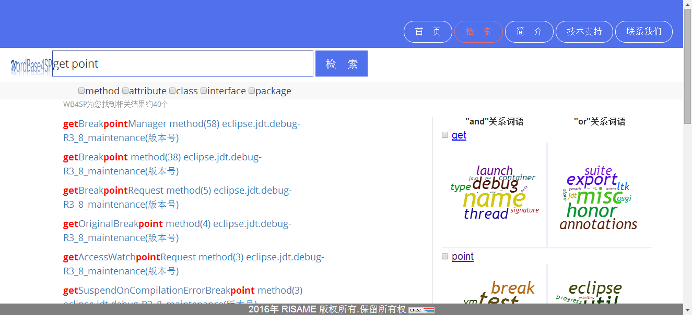选择搜索框下面的属性，即可对查询内容进行筛选。
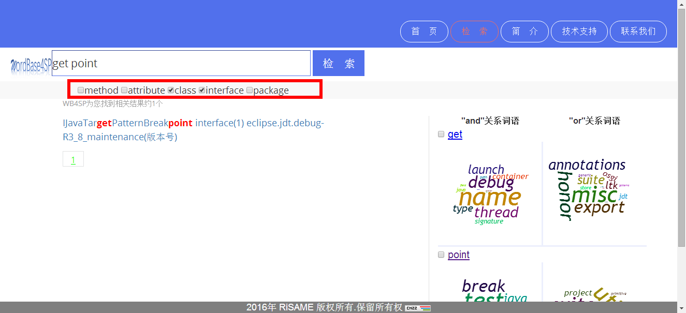提供演化过程，方便软件维护人员进行维护。
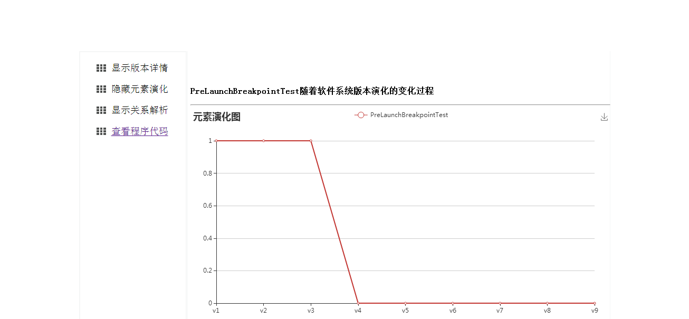元素在各版本中的详细信息。
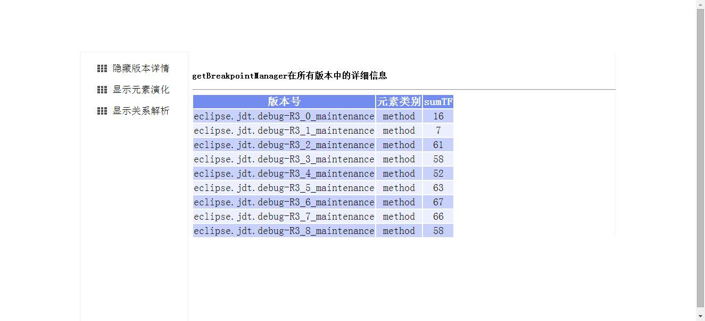当该元素是class时，可以查看整个类的源代码。
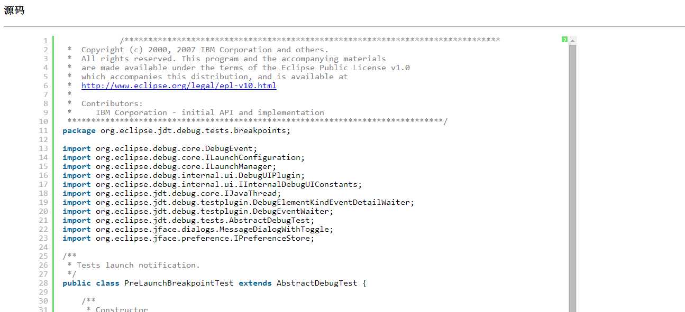